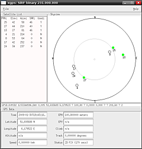

gpsd
Dieser Artikel wurde für die folgenden Ubuntu-Versionen getestet:
Ubuntu 14.04 Trusty Tahr
Zum Verständnis dieses Artikels sind folgende Seiten hilfreich:
gpsd  ist ein Hintergrund-Programm ("Daemon"), welches die Daten von einem oder mehreren GPS-Empfängern ausliest, die per USB, Bluetooth oder serieller Schnittstelle an den Computer angeschlossen sind. Die erfassten Daten (geografische Position, Richtung, Geschwindigkeit) können von Client-Applikationen genutzt werden, z.B. zur Navigation mit GpsDrive oder Navit. Neben dem eigentlichen Dienst stellen die Entwickler zusätzliche Hilfswerkzeuge zur Diagnose bereit. gpsd kann auch mehrere GPS Anwendungen gleichzeitig bedienen oder über das Netzwerk zur Verfügung stellen.
ist ein Hintergrund-Programm ("Daemon"), welches die Daten von einem oder mehreren GPS-Empfängern ausliest, die per USB, Bluetooth oder serieller Schnittstelle an den Computer angeschlossen sind. Die erfassten Daten (geografische Position, Richtung, Geschwindigkeit) können von Client-Applikationen genutzt werden, z.B. zur Navigation mit GpsDrive oder Navit. Neben dem eigentlichen Dienst stellen die Entwickler zusätzliche Hilfswerkzeuge zur Diagnose bereit. gpsd kann auch mehrere GPS Anwendungen gleichzeitig bedienen oder über das Netzwerk zur Verfügung stellen.
Installation¶
Um gpsd nutzen zu können, muss das folgende Paket installiert werden:
gpsd (universe )
 mit apturl
mit apturl
Paketliste zum Kopieren:
sudo apt-get install gpsd
sudo aptitude install gpsd
Weitere nützliche Tools rund um das Thema GPS werden mit folgendem Paket installiert:
gpsd-clients (universe, z.B.
gpxloggeroderxgps)
mit apturl
Paketliste zum Kopieren:
sudo apt-get install gpsd-clients
sudo aptitude install gpsd-clients
Benutzung / Konfiguration¶
gpsd ist nach der Konfiguration üblicherweise richtig konfiguriert. Die allgemeine Syntax ist:
gpsd [-b] [-n] [-N] [-D n] [-F sockfile] [-P pidfile] [-S port] [-h] device...
Die Tabelle zeigt eine Übersicht der möglichen Parameter:
| Befehlsparameter | ||
| Parameter | Zusatz | Beschreibung |
-b | stellt eine Nur-Lesen Verbindung zum Bluetooth-GPS-Gerät her | |
-n | versendet die Positionsdaten und wartet nicht auf eine Anwendung | |
-N | wird kein Hintergrunddienst | |
-F | Socket-Datei | Angabe der bidirektionalen Softwareschnittstelle |
-P | PID-Datei | erzeugt eine Prozess-ID-Datei |
-D | Ganzzahl (Standard 0) | setzt die Menge der Debug-Ausgabe |
-S | Ganzzahl (Standard 2947) | definiert den Port für den Dienst |
-h | Hilfe | |
-V | Versionsanzeige | |
Testen / Debug¶
Zum Testen startet man gpsd im Debug-Modus. Für eine GPS-Maus am USB-Anschluss sieht der Befehl so aus:
gpsd -n -N -D4 /dev/ttyUSB0
Ist die GPS-Maus an einer seriellen Schnittstelle angeschlossen, ist der Befehl entsprechend abzuändern.
Mit dem telnet-Befehl kann man den GPS-Empfänger über gpsd ansprechen, wobei 2947 der Standardport ist und mit angegeben werden muss:
telnet localhost 2947
aktiver Einsatz¶
Kommandozeilenbefehle¶
Um den Dienst zu starten, reicht ein einfacher Aufruf im Terminal:
gpsd /dev/ttyUSB0
Können Positionsdaten ermittelt werden, so werden diese über gpsd anderen Anwendungen zur Verfügung gestellt. Somit greifen die aktuellen Navigationsprogramme nicht mehr direkt auf die Hardware, sondern auf den Dienst zurück.
Um zu überprüfen, ob auch Daten übertragen werden, kann man über ein zweites Terminal die grafische Unterstützung starten:
|  |
| xgps |
xgps
Möchte man seinen zurückgelegten Weg aufzeichnen, kann man gpxlogger benutzen. gpxlogger läuft in einem weiteren Terminal und schreibt dort fortlaufend die Postionsdaten im GPX-Format auf die Standardausgabe. Um die Strecke zu speichern, muss man die Ausgabe in eine Datei (hier tracklog.gpx) umlenken:
gpxlogger > tracklog.gpx
Um die Aufzeichnung zu stoppen, beendet man gpxlogger mit Strg + C .
Hinweis:
Nur wenn das im Terminal laufende Programm über Strg + C beendet wird, erfolgt die fehlerfreie Speicherung im GPX-Format! Das entsprechende Terminal-Fenster nicht einfach schließen.
Unterstützte Hardware¶
Chipsätze¶
Generic NMEA
Ashtech
San Jose Navigation FV18
Furuno Electric GH-79L4
Garmin Serial
Delorme TripMate
Delorme EarthMate (pre-2003, Zodiac chipset)
Zodiac binary
Navcom binary
uBlox UBX
Garmin USB binary
Garmin Serial binary
SiRF binary
Trimble TSIP
EverMore binary
iTalk binary
RTCM104
Garmin Simple Text
GPS-Empfänger¶
NaviLock NL-202U
NaviLock NL-302U (läuft sofort unter /dev/ttyUSB0)
NaviLock NL-402U (starten mit gpsd -b /dev/ttyACM0)
NaviLock NL-409TE (läuft sofort unter /dev/ttyUSB0)
NaviLock NL-454US (sofort mit gpsd /dev/ttyUSB0)
Holux GM210 USB (Modul pl2303)
iGPS-M Pro USB (wird als CP2101 erkannt, Modul cp2101, läuft sofort mit /dev/ttyUSB0)
QSTARZ BT-Q818
TomTom wireless GPS MkII
No-Name Produkt mit Sirf III Chipsatz (läuft sofort mit /dev/ttyUSB0)
GlobalSat BU-353 (läuft sofort mit /dev/ttyUSB0)
Garmin eTrex Legend® HCx (Modul garmin_gps, /dev/ttyUSB0)
Garmin GPSMap 60CSx (Modul garmin_gps, /dev/ttyUSB0)
Mainnav-GPS (über Bluetooth)
Fortuna Clip-On (über Bluetooth)
Problembehebung¶
GPS-Mäuse mit Bluetooth¶
Beim Versuch, gpsd mit Bluetooth-Mäusen zu betreiben, sind folgende Probleme aufgetreten:
Das Gerät (device) /dev/rfcomm0 wurde nicht automatisch angelegt
Der gpsd war nicht auf die Benutzung der Schnittstelle /dev/rfcomm0 eingestellt
Der gpsd Dienst startet mit ungenügenden Rechten und kann nicht auf die Schnittstelle /dev/rfcomm0 zugreifen
Um diese Probleme zu beseitigen, geht man folgendermaßen vor:
/dev/rfcomm0 automatisch anlegen und "binden"
mit dem GNOME Bluetooth Applet die GPS Maus mit dem Rechner koppeln
die Datei /etc/bluetooth/rfcomm.conf in einem Editor [3] mit Root-Rechten[4] bearbeiten
# # RFCOMM configuration file. # rfcomm0 { # # Automatically bind the device at startup bind yes; # # # Bluetooth address of the device device xx:xx:xx:xx:xx:xx; # # # RFCOMM channel for the connection channel 1; # # # Description of the connection comment "iBT-GPS"; }Den richtigen Eintrag für
deviceermittelt man in einem Terminal-Fenster mit:hcitool scan
Der
channelmuss auch beachtet werden, sollte in den meisten Fällen aber 1 sein. Die Beschreibung untercommentkann frei gewählt werden. Die Datei dann abspeichern.Die Datei /etc/rc.local in einem Editor mit Root-Rechten bearbeiten und folgende Zeilen vor dem
exit 0einfügen# BT GPS Maus mit rfcomm0 binden /usr/bin/rfcomm bind 0
dann abspeichern.
gpsd mit /dev/rfcomm0 konfigurieren:
gksu gnome-terminal
im Terminal dann
dpkg-reconfigure gpsd
ausführen.
Die Fragen wie folgt beantwortenautomatisch starten? "Ja"
Gerät an dem der GPS Empfänger angeschlossen ist: /dev/rfcomm0
Optionen für gpsd:
-b
dem gpsd genügend Rechte geben, um die Schnittstelle zu benutzen, Dazu die Datei /etc/init.d/gpsd in einem Editor mit Root-Rechten bearbeiten und die Stellen, an denen
start-stop-daemonaufgerufen wird, um die Option-g dialouterweitern (am komfortabelsten über einen Suchen/Ersetzen-Durchlauf).
Nach einem Neustart sollte dann das GPS-Bluetooth-Gerät funktionieren.
Im englischen Ubuntu-Wiki gibt es eine kurze Anleitung: BluetoothGPS
Links¶
OpenStreetMap - Landkarten-Projekt unter einer freien Lizenz
NaviLock
 - Hersteller von GPS-Empfängern, der auch Linux-Treiber dazu anbietet
- Hersteller von GPS-Empfängern, der auch Linux-Treiber dazu anbietetGpsd
- Wiki-Eintrag im Wardriving-Wiki
- Erstellt mit Inyoka
-
 2004 – 2017 ubuntuusers.de • Einige Rechte vorbehalten
2004 – 2017 ubuntuusers.de • Einige Rechte vorbehalten
Lizenz • Kontakt • Datenschutz • Impressum • Serverstatus -
Serverhousing gespendet von